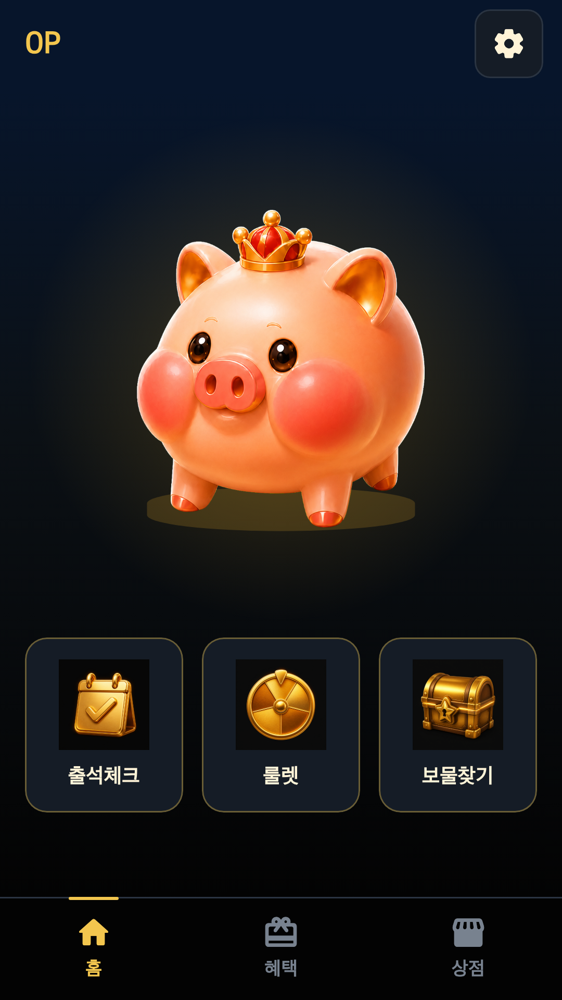
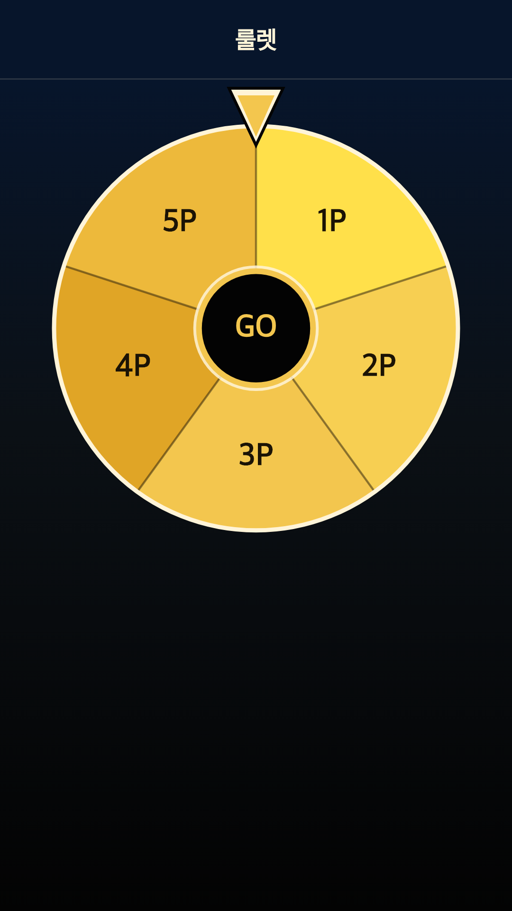
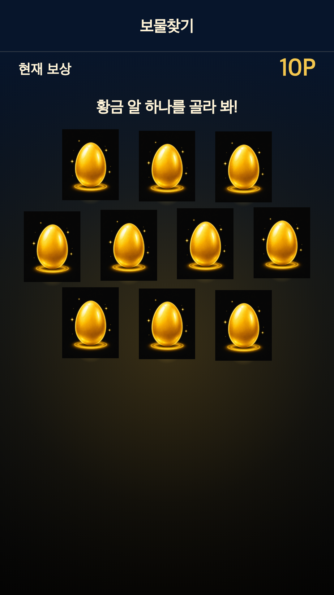
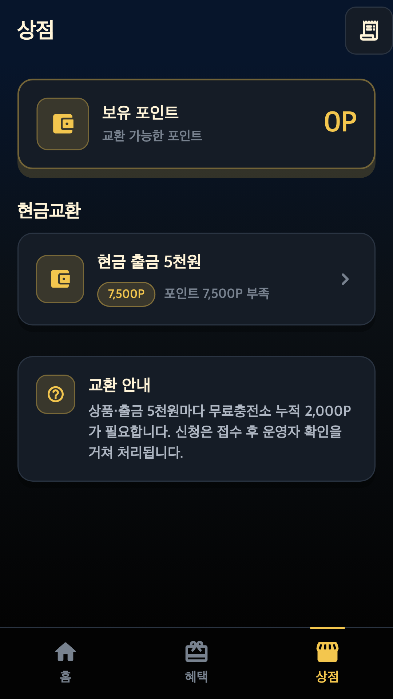

캐시돼지 서비스 소개 및 회원가입 시나리오
Cashpiig · 패키지명: com.ttalkkag.cashpiig · 작성일: 2026년 10월 21일
서비스 운영자 및 사업자 정보
상호: 에이아이해줘(aiHaejwo)
사업자등록번호: 457-06-03603
개인정보·서비스 문의: aihaejwo@gmail.com
캐시돼지(Cashpiig)는 에이아이해줘(aiHaejwo)가 운영합니다.
어떤 서비스인가요?
캐시돼지는 돼지 터치, 출석체크, 룰렛, 황금 알 보물찾기, 광고·무료충전소 참여에 따른 포인트 적립을 제공하는 Android 리워드 앱입니다. 보유 포인트와 조건을 확인하고 상점에서 상품 교환·현금 출금을 신청할 수 있습니다.
로그인 화면 구성
아래는 프로젝트 로그인 화면의 문구와 버튼을 재현한 구성도이며, 실제 캡처가 아닙니다.
캐시돼지
캐시돼지를 터치하고 포인트를 받아보세요
이용약관 · 개인정보처리방침
별도의 아이디·비밀번호 가입 없이 카카오로 로그인 버튼에서 신규 계정을 생성하며, 기존 회원도 같은 버튼을 사용합니다. 게스트 모드는 체험용이며 실제 서버 포인트 적립·교환·출금 신청은 회원 기능입니다.
카카오계정 전화번호 필수 회원가입 정책
카카오계정 전화번호 필수 수집과 미동의 가입 제한은 동의항목 권한 승인 후 적용할 회원가입 정책입니다. 현재 배포 앱에서 해당 동의항목 승인 또는 가입 차단 구현이 완료되었다는 증빙은 아닙니다.
- 카카오로 로그인: 신규 이용자와 기존 회원 모두 로그인 화면의 같은 버튼을 선택합니다.
- 카카오 인증: 카카오톡 또는 카카오계정 인증을 통해 서비스에 로그인합니다.
- 전화번호 필수 동의: 승인 후 카카오계정 전화번호를 회원가입 필수 동의항목으로 제공받는 정책입니다.
- 회원 식별·가입: 회원 식별 및 기존 계정 확인 후 신규 회원가입 또는 기존 회원 로그인을 완료합니다.
- 미동의·미보유 처리: 승인 후 전화번호가 없거나 필수 제공에 동의하지 않으면 회원가입을 완료하지 않는 정책입니다.
- 가입 후 서비스 이용: 돼지 터치·미션·광고 및 무료충전소 참여 → 포인트 적립 → 상점 신청·처리 상태 확인으로 이어집니다.
전화번호는 카카오 로그인 동의에 따른 API 제공 정보로 수집하며, 회원가입·계정 관리·중복 및 부정 이용 방지에 이용합니다. 단말 전화 권한으로 번호를 읽거나 직접 입력받는 방식은 사용하지 않습니다.
가입 후 이용 동선 및 상세 서비스 화면
앱 프로젝트의 실제 위젯을 테스트 데이터로 렌더링한 화면입니다. 실제 이용자 정보는 포함하지 않습니다. 포인트·상품·신청 조건은 테스트 예시이며 최신 운영 안내는 앱을 기준으로 합니다.

홈에서 보유 포인트를 확인하고 돼지를 터치해 리워드 활동에 참여합니다. 광고 완료 및 서버 검증 후 포인트를 적립하며, 출석체크·룰렛·보물찾기로 이동할 수 있습니다.

홈의 룰렛 버튼으로 진입합니다. GO 버튼을 선택해 리워드 미션에 참여하며, 화면에 포인트 보상 구간을 표시합니다.

홈의 보물찾기 버튼으로 진입합니다. 황금 알 중 하나를 선택해 미션에 참여하고 현재 보상 포인트를 확인합니다.

하단 상점 탭에서 보유 포인트, 필요한 포인트와 무료충전소 조건을 확인합니다. 조건 충족 후 현금 출금 등을 신청하며, 접수 후 운영자 확인을 거쳐 처리합니다. 신청 접수만으로 지급이 확정되지 않습니다.
혜택·무료충전소 이용
하단 혜택 탭 → 무료충전소 시작 → 제휴 혜택 선택·참여 → 제휴사 보상 검증 → 포인트 반영 순서로 이용합니다. 상점에서는 누적 무료충전소 포인트와 신청 조건을 별도로 확인합니다.